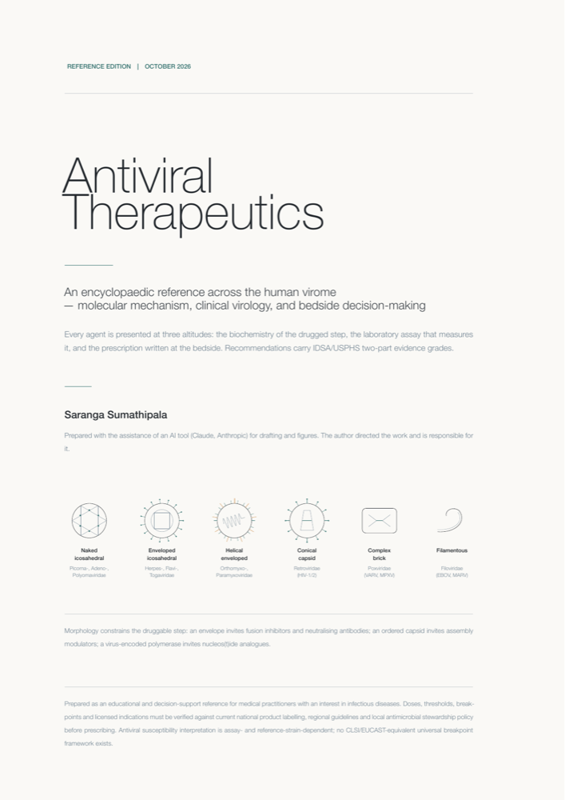

Open access · Reference
Antiviral Therapeutics
An encyclopaedic reference across the human virome — molecular mechanism, clinical virology and bedside decision-making — for medical practitioners with an interest in infectious diseases.
Saranga Sumathipala · Reference edition, 2026 · PDF, 69 pages
Download PDF
Read online

At a glance
69pages
27chapters
10original figures
4appendices
How it is written
Every virus chapter is written at three altitudes, marked in the text:
- Molecular virology — genome class, the precise enzymatic or structural step inhibited, the biochemistry of inhibition, and the structural basis of escape.
- Clinical virology — which assay on which specimen in which units, how to read a viral load, when to order genotypic or phenotypic resistance testing, and the pre-analytical traps.
- Bedside — indication, regimen, dose, duration, renal and hepatic adjustment, interactions, monitoring, and what to do when first-line fails.
Recommendations carry IDSA/USPHS two-part evidence grades (A–E for strength, I–III for quality), with an explicit warning that most inpatient antiviral practice rests at B-II or C-III rather than A-I.
Contents
- The druggable virus: why antivirals are few, narrow and hard
- Molecular pharmacology: activation, inhibition, exposure
- Antiviral resistance: evolutionary and molecular principles
- Resistance testing: history, methods, scientific principles
- Clinical virology measurement and decision-making
- Dose adjustment and special populations
- Antiviral stewardship
- Herpes simplex virus and varicella zoster virus
- Cytomegalovirus
- Epstein–Barr virus, HHV-6, HHV-7 and HHV-8
- Hepatitis B and hepatitis D
- Hepatitis C
- Hepatitis A and hepatitis E
- Human immunodeficiency virus (and HIV-2, HTLV)
- Influenza
- Coronaviruses
- RSV, metapneumovirus, parainfluenza, measles, Nipah
- Enteroviruses, rhinoviruses and parechoviruses
- Adenovirus, polyoma-, papilloma- and parvoviruses
- Poxviruses
- Rabies, arboviral flaviviruses and alphaviruses
- Viral haemorrhagic fevers
- Viral gastroenteritis
- Drug interactions
- Toxicity and monitoring
- The immunocompromised host
- Where the field is going
Appendices: an antiviral spectrum matrix; viruses for which there is no effective antiviral, with what does change outcome; a resistance-mutation quick reference; and abbreviations.
Licence and use
© 2026 Saranga Sumathipala. Published under the Creative Commons Attribution 4.0 International License (CC BY 4.0). You may share and adapt it for any purpose with appropriate credit.
Suggested citation: Sumathipala S. Antiviral Therapeutics: An Encyclopaedic Reference Across the Human Virome. Reference edition, 2026. Open access, CC BY 4.0.
Prepared with the assistance of an AI tool (Claude, Anthropic), used to draft text and produce the figures; the author directed the work and is responsible for it. For education only — doses, thresholds and licensed indications change and differ between countries. Verify against current national labelling and local guidelines before prescribing.